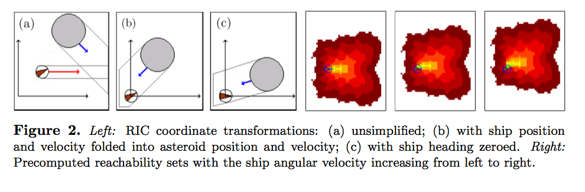

Improved Motion Planning Speed and Safety using Regions of Inevitable Collision
N. Chan, J. Kuffner, M. Zucker. (2008). Improved Motion Planning Speed and Safety using Regions of Inevitable Collision. 17th CISM-IFToMM Symposium on Robot Design, Dynamics, and Control.What problem does the paper solve and why is this interesting?
Chan et al. present a modified path planner which incorporates an approximation of the regions of inevitable collision (RIC) to help guide the path planning process as well as speed it up over longer planning horizons. Chan et al. also discuss how regions of potential collision (RPC) and regions of near-collision (RNC) can be used to inform a naive path planning algorithm.By extending the planning horizon, normal path planners can avoid many regions of inevitable collision, but extending the planning horizon is not necessarily viable given computational constraints. Incorporating RIC approximation in a limited time horizon planner can improve safety and speed by allowing the planner to avoid sampling in regions that will inevitably fail.
How do they solve this problem?
Chan et al. utilize precomputed cost maps in order to explore possible control actions in order of increasing expected path cost using a limited-time horizon A* planner. The planner has a fixed relative goal, but does not terminate once safety is reached, the spaceship must remain safe as new randomly generated asteroids enter the world.Any state whose successors are exclusively in the RIC, is also in the RIC. The parent of any state not in the RIC is also not in the RIC. Chan et al. use the union of RICs for individual obstacles as the global RIC, this approximation fails to account for specific cases where the motion of multiple obstacles together blocks escape. Search depth for the approximate RIC is also limited, leading to false true RIC values for large obstacles.
Chan et al. utilize some clever coordinate transforms to reduce the 6D state space of the simulation (x and y position, x and y velocity, heading, and angular velocity) to asteroid relative position, asteroid relative velocity, and ship angular velocity (shown below). Because of these simplifications, it is only necessary to save the reachable table for angular velocity.
 Chan et al. also discuss the benefits of utilizing RNC and RPC metrics. The RNC is a region of near-collision, which rates the safety of states based on how far their best availalbe route avoids the RIC. The RPC is the region of possible collision, which includes states which are in danger of entering the RIC due to error or uncertainty in control. Both the RNC and RPC utilize a user defined threshold of safety cutoff for inclusion in the sets.
How did they test their solution?
Chan et al. test their solution in a spaceship and asteroids model similar to the game Asteroids. Asteroids are randomly sized (with a defined max size) and have random, constant velocities that do not change in magnitude or direction.Future work and questions
Can path planning (which only considers kinematics) be able to find an optimal solution (without searching in the true, high-dimensional space)?October 3, 2017
Sam Ingersoll